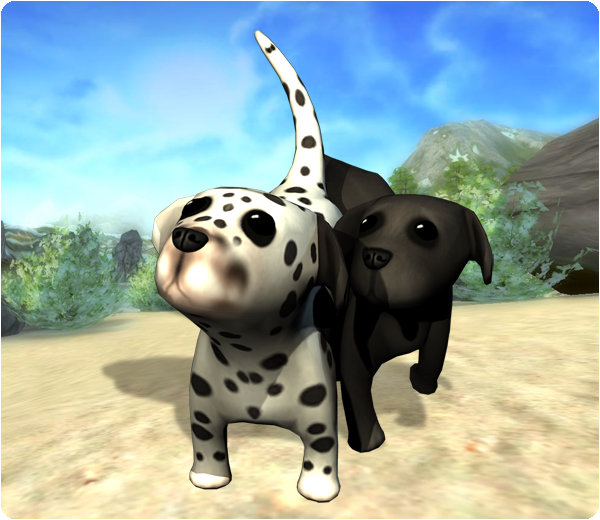
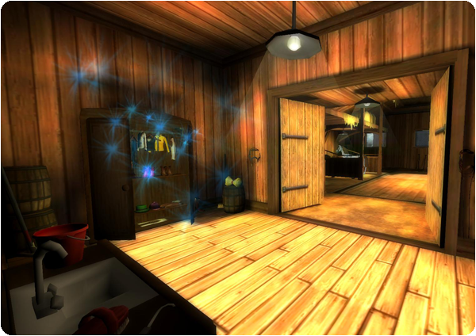

Hello everyone!
This is what's new in this week's update!
New quests:
There's less than a week until Christmas day! How exiting is that?! The Christmas preparations continues this week with more quests. For those of you who have been so kind and helped with all the Christmas preparations can expect great Christmas gifts once you are done with all the quests! Don't worry if you've missed a few days. The Christmas quests will continue for some time after Christmas!
New feature:
You can now buy your very own pet! To do this you must have access to Fort Pinta (Level 4). Talk to the girl outside the shop called Pet Shop Girls in Fort Pinta she will help you!

New home stable:
Your home stable has changed. You can now walk into your very own stable! To change from one home stable to another it will now cost 25 Star Coins. The Construction workers at Fort Pinta and at Steve's farm has finished building and they have managed to build two new magnificent stables!

New clothing and equipment in the Christmas shop:
The green knitted Christmas sweater had gone astray last week but now it has found its way home. You can find it and other new Christmas clothes in the Christmas shop in Moorland!
Ps. Don't forget to check out the new paddock below Silverglades Equestrian Center!